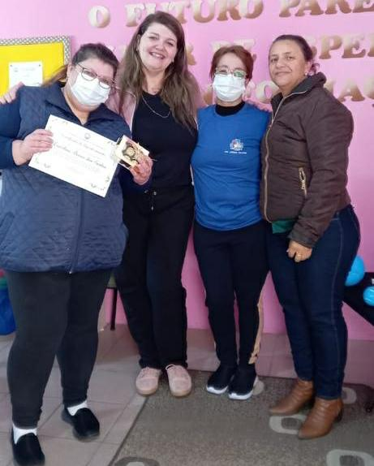

Palestras
Realizado uma palestra na Escola Emilio Tarragô sobre sexualidade pela equipe de Estratégia Saúde da Família

Campanha
Agende seu exame preventivo, mantenha seus exames em dia.
Prevenção
Maio, mês de prevenção a Saúde Bucal. Agende seu exame Bucal.

Prevenção
Aumentos de caso de Dengue no Litoral Norte, pedem atenção da comunidade.